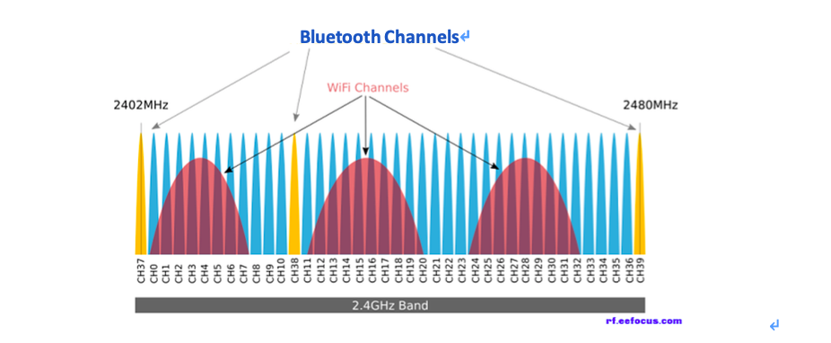

信息概述
测试任务：井下视频信号测试
测试日期：2019年10月15日 周二
测试人员：王栋 贺成柱
测试时间：3.5小时
测试地点：塔山矿一盘区辅运巷、三盘区辅运巷
测试设备：料车一辆、二期车载终端一套（操作台、蓄电池）、北京安信广通矿用平板电脑两台（0220、0001），济南华科4G手机两台（1901002，1901003）
测试结果
软件功能
已完成功能
| 功能列表 | 测试结果 |
|---|---|
| 操作台按键控制平板操作 | 通过 |
| 视频主动通话 | 通过 |
| 视频被动通话 | 通过 |
| 视频通话中IP地址切换 | 通过 |
| 视频通话终端重新连接 | 通过 |
| 信号不稳定的时候反复呼叫 | 通过 |
| 行车监控 | 通过 |
| 操作台蓝牙按键操作 | 通过 |
| 操作台蓝牙语音输入 | 有问题 |
| 操作台蓝牙语音播放 | 有问题 |
| 任务接单 | 通过 |
| 任务执行 | 通过 |
| 任务完成 | 通过 |
| 任务拒绝 | 通过 |
| 导航路线绘制 | 通过 |
| 实时显示车辆位置 | 未测试 |
备注：
- 本次测试增加两台本安型设备对比测试。
- 从井口到一盘区八联巷进行丢包率测试，为了较少测试误差，所有设备均不运行任何软件。（详见
信号强度） 入井方向进行设备视频接通状态对比。出井方向测试长时间通话与断网重连成功次数。- 测试视频通话的同时测试操作台蓝牙连接。
优化功能
- 信号不好的情况下增加接通率。（基础功能）
- 在地图上实时绘制车辆位置。（额外功能）
信号强度
- 1.一联巷-六联巷 信号测试
| 设备 | IP地址 | 丢包率 |
|---|---|---|
| 0001（平板） | 10.106.16.2 | 10% |
| 0220（平板） | 10.106.16.4 | 4% |
| 1901002（手机） | 10.106.16.11 | 0% |
| 1901003（手机） | 10.106.16.1 | 0% |
- 2.六联巷-八联巷 信号测试
| 设备 | IP地址 | 丢包率 |
|---|---|---|
| 0001（平板） | 10.106.3.2 | 12% |
| 0220（平板） | 10.106.3.1 | 6% |
| 1901002（手机） | 10.106.3.4 | 2% |
| 1901003（手机） | 10.106.3.5 | 1% |
3.三盘区5303巷口 停车测试
0001（平板）停车后信号显示满格，经过多次测试，第六次才成功接通，用时11秒左右。1901002（手机）经过多次测试，5秒钟内可以顺利接通。
4.三盘区辅运巷 600米-2000米 视频通话测试
0001（平板）0220（平板）多次尝试没有接通0001（平板）0220（平板）在1500米-2000米处搜不到信号。0001（平板）0220（平板）在连接操作台测试的时候，会受到蓝牙与wifi信号的干扰，视频测试没有成功。（详见蓝牙WIFI信号干扰原因及解决方案）1901002（手机）可以顺利接通。1901002（手机）通话过程中有丢失信号的情况，重新连接后可以继续视频通话。1901002（手机）在连接操作台测试的时候，会受到蓝牙与wifi信号的干扰，多次测试仅有一次测试成功，而且连接耗时12秒左右，耗时较长基本属于不可用状态。详见蓝牙WIFI信号干扰原因及解决方案）
5.8301中间巷 停车测试
0001（平板）1901002（手机）均可以顺利接通。
6.一盘区盘底–避难洞室 测试长时间通话与断网重连成功次数
1901002（手机）进行长时间通话。- 测试通话时长10分钟左右。
- 断网重连成功
4次，成功3次。 - 到达
避难洞室附近时，4台测试设备均无法搜到信号。 - 由于长时间没有信号，手动中断通话连接。
7.避难洞室–井口 测试长时间通话与断网重连成功次数
1901002（手机）进行长时间通话。- 测试通话时长25分钟左右。
- 断网重连成功
3次，成功3次。 - 到达井口后，视频通话没用中断，手动中断通话连接。
0001（平板）在避难洞室到井口的这段距离内始终没有搜到信号。
蓝牙WIFI信号干扰原因及解决方案
原因分析
- 1.如下图所示，蓝牙频段（2402-2480MHz）与WIFI频段有部分重合。蓝牙采用的跳频技术，每秒跳频1650次，当跳频到与所使用的WIFI频率重合时，会对WIFI造成影响。
- 2.平板设备，同时用蓝牙和WIFI通信时，如果蓝牙天线和WIFI天线离得比较近的话，更容易相互干扰。

通常解决方案
- 连接至5GHz无线网络
- 既然知道了问题出在频段冲突上，那么可以考虑购买一个双频（2.4GHz + 5GHz）路由器。由于我们的布站策略是2.4Ghz覆盖，该方法在塔山无法实施。
- 连接至5GHz无线网络
- 更换Wi-Fi信道
- 1、6、11中的任何一个。这些为2.4GHz的不重叠传输信道，相较于其他信道更稳定一些。现在覆盖的WIFI通道已经是1、6、11通道。
- 更换Wi-Fi信道
- 开启网卡蓝牙共存功能
- 矿用平板的网络模块没有这个功能。
- 开启网卡蓝牙共存功能
针对现状拟采取的方案
- 1.车载终端USB接口扩展解决方案
- 该方案无需修改硬件，但是需要调试USB声卡、数据传输复合功能，技术难度较大，需要时间较长。至少需要一周时间确定该方案的可行性。
- 2.车载终端硬件修改
- 只利用USB接口传输声音，车载终端主板修改，增加串行口，用于传输数据。该方案技术难度相对小，但是修改硬件后涉及送审变更，时间周期更长。